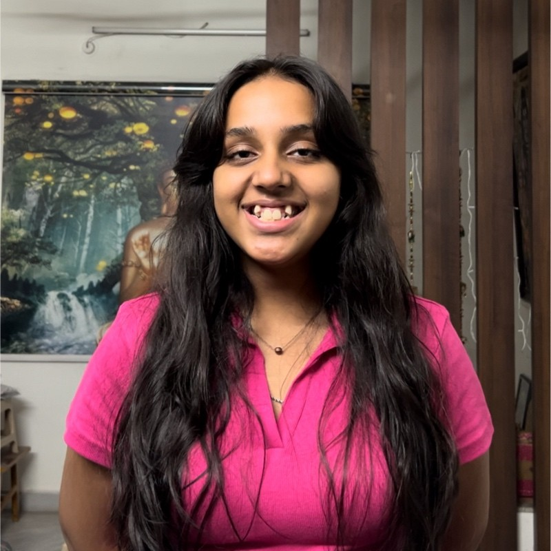

Kruthika Karra

Summary
I am a rising engineer studying Electronics and Communication Engineering. I am very hard working and optimistic. My skill set includes Python, Java, HTML. My people skills include critical thinking and problem solving. I am currently seeking for opportunities through which I can showcase my skills and gain experience and knowledge.
Education
Vellore Institute of Technology, Chennai
B.Tech Electronics and Communication Engineering
2023-2027
CGPA: 8.85
-
Meru International School, Hyderabad
CBSE Grade 11 and Grade 12
2021-2023
Percentage in Grade 12: 94%
Work Experience
-
Social Media Manager
ZVIA, Chennai
February 2024 - June 2024
Projects
- Exploring Precision Agriculture: A Weka-Based Approach
for Accurate Yield Prediction in Indian Rice Farming
Click Here
Skills
-
Technical Skills
-
Programming Languages: Python, Java, HTML
-
Project Management
-
Soft Skills
- Communication
- Team collaboration
- Problem solving
- Active Listening
Extracurricular Activities
- Volunteer in Cookathon-24, VIT Chennai
- Club member in:
- SEDS Antariksh
- IEEE Women in Engineering
- GirlUp VITC
- DAO
Languages
- French
- Hindi
- Telugu
- English
Contact Me